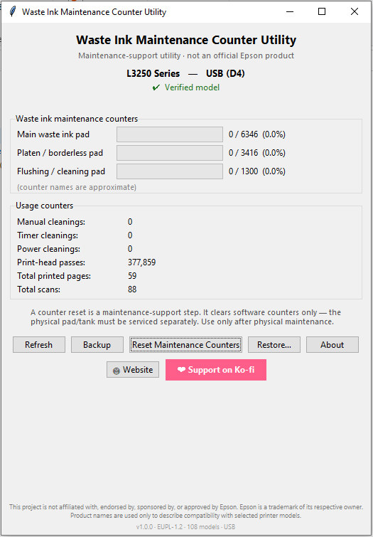

A maintenance-support tool — not an official Epson product.
⬇ Download (Windows) View source ❤ Support on Ko‑fiNew here? See install & verification ↓

A counter reset clears only the software counter. The physical waste-ink pad is still full and must be inspected, cleaned, replaced, or redirected to an external tank — otherwise ink can overflow inside the printer. Use this only for legitimate owner maintenance, after physical service.
Verified on hardware (June 2026): L3250 / L3251 / L3253 / L3255.
Experimental (unverified): additional compatible models — use extra caution.
See the full model list and data provenance.
MaintenanceCounterUtility.exe.SHA256SUMS.txt, or build it yourself from source.Help: User Guide · FAQ · Fixing the Epson L3250 service-required error
This tool is free and open-source, with no ads and no telemetry. If it helped you, a small tip keeps it maintained (entirely optional).
❤ Support on Ko‑fi